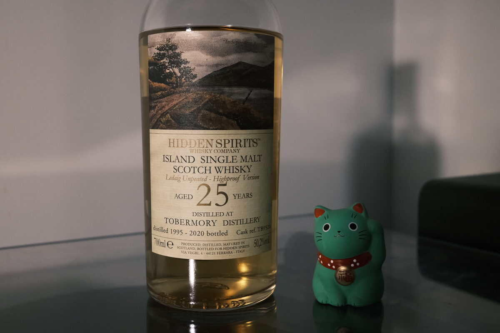

Tobermory "Ledaig Unpeated" 1995 Hidden Spirits 25 years 50.2% (refill exbourbon hogshead)
Tobermory… tick… Hidden Spirits… tick. Wait. “Ledaig Unpeated”? Shouldn’t Ledaig be “Tobermory Peated” if anything? According to Andrea (London Whisky Club) of Hidden Spirits, this might have been a cleaning run through the stills after a run of peated spirit. Apparently Ledaig was less peated back then, this this could easily be confused with the cleaning run. Anyway, Ledaigamory.
Colour Light gold.
Nose Candlewax. Peaches and nectarines. Glossy paper magazines. Leather boots (car seats?). Brown sugar. Menthol, mint, fennel, and coriander. Peppery, brine, coastal. Boozy ice cream topped with ripe cherries. Fresh ricotta drizzled with honey. Spicy oak. Lemon balm and orange zest. Wow – as soon as you focus on to one note, the nose unfolds in a completely different way. Bit of a mindbender this one (from previous notes: spanakopita?!).
Palate Thick. Herbal and peppery. Elegant sweetness, hard to pin down, but probably peaches, kiwis, or that mild-if-anything sweetness of a scone. There’s an odd savoury note: wax? Brine? Mushrooms? Perhaps, it’s delicate, elegant, intriguing. Pour some more… yes… huge, herbaceous malt, oak and tannins. Chocolate pralines and hot spices: chilli, cayenne pepper, Sichuan peppercorn. A drop of rosewater and minerality. Citrus oils.
Finish Menthol and pepper. Salted caramel gelato. Very full, creamy. White chocolate and almonds. Weathered wood. A herbal digestif. Funky scented candles. Maybe some tropical fruits, mangoes and bananas. Should mention at this point – the intensity of this is off the charts. Similar to the 2007 Linkwood also by Hidden Spirits. Powerfully warming. Do I need to say long?
Comments This is a dram that inspires some poetry. Apologies for the verbal vomit. Anyway. Delicate but powerful. Elegant and complex. Intriguing, thoughtful stuff – even a little difficult. Blue and orange, yadda yadda. 91/100.

Posted by Dominic on 06 May 2021